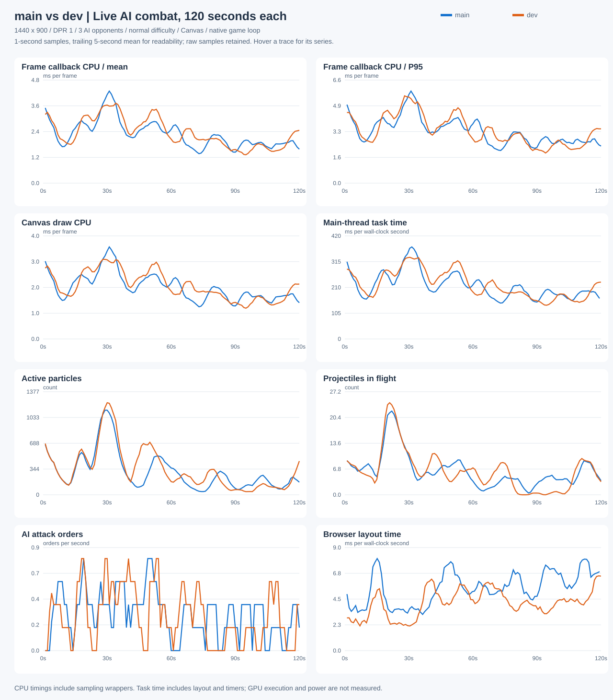

| Metric | main | dev |
|---|---|---|
| Frame callback CPU, mean (ms) | 2.24 | 2.34 |
| Frame callback CPU, P95 (ms) | 4.00 | 4.10 |
| Canvas draw CPU, mean (ms) | 1.97 | 2.05 |
| Main-thread task time (ms/s) | 214.78 | 221.07 |
| Layout time (ms/s) | 5.52 | 4.23 |
| Observed FPS | 60.00 | 60.00 |
| Frame interval P95 (ms) | 16.70 | 16.70 |
| Frame interval P99 (ms) | 16.80 | 16.80 |
| Frame gaps >25 ms | 0.00 | 0.00 |
| Frame gaps >50 ms | 0.00 | 0.00 |
| AI attack orders | 38.00 | 37.00 |
| AI-to-AI attack orders | 6.00 | 3.00 |
| Launched munitions | 93.00 | 93.00 |
| Explosions | 69.00 | 77.00 |
| Interceptions | 28.00 | 19.00 |
| Mean particles | 301.72 | 341.84 |
| Peak particles | 1336.00 | 1607.00 |
| Mean in-flight projectiles | 6.31 | 6.26 |
| Peak in-flight projectiles | 23.00 | 25.00 |